Lily Leap (Sky Jump theo chặng)
100 người, thắng liền 5 màn để về đích; người sống sót chia đều giải.
Mô tả
- Tên trong game: Lily Leap. Ghép 100 người cùng trình, thắng liền N màn ngay lần đầu (stage 1: 5, stage 2: 7) để về đích; thua là rơi. Người về đích chia đều giải 5.000 / 7.000 /
 10.000 coin (playtest 28/10: 23 người về đích, mỗi người 217 coin). Đồng hồ 24 giờ tính từ lúc tham gia.
10.000 coin (playtest 28/10: 23 người về đích, mỗi người 217 coin). Đồng hồ 24 giờ tính từ lúc tham gia.
Thiết kế chi tiết
Tóm tắt thiết kế
Playtest Tên trong game là Lily Leap (code SkyJumpWithStage), mở từ level 40. Bấm Start thì ghép 100 người cùng trình. Mục tiêu stage 1: thắng liền 5 màn ngay lần đầu. Mỗi trận thắng nhảy một lá sen; thua là rơi xuống nước và bị loại khỏi stage.
PlaytestLive 28/10 Người về đích chia đều giải: stage 1 5.000, stage 2 7.000 (7 màn), stage 3 10.000 coin. Playtest: số người còn lại qua từng bước là 100 → 85 → 70 → 54 → 39 → 23, nên mình nhận 5.000 / 23 = 217 coin.
Playtest Đồng hồ 24 giờ tính từ lúc bấm Start (23h 59m), không theo lịch chung.
Code GetSharingRewardsWith, GetWinnerCount, GetUsersInThisStep (đếm người ở từng lá), TryFall khi thua. Danh sách người chơi do server gửi (StagedSkyJumpTournamentLeaderboardResponse).
Nhận định Giải ghi to (5.000) nhưng phần thật chỉ vài trăm coin. Cảm giác “mình là 1 trong 23 người sống sót” mạnh hơn nhiều so với con số.
Luồng người chơi từng bước
- Popup mờiGiao diện PlaytestIcon cây ăn thịt “Join” bên trái Home. Popup: Pass 5 Levels in a row on first try, Grand Prize 5000, Stage 1/2/3, Start!
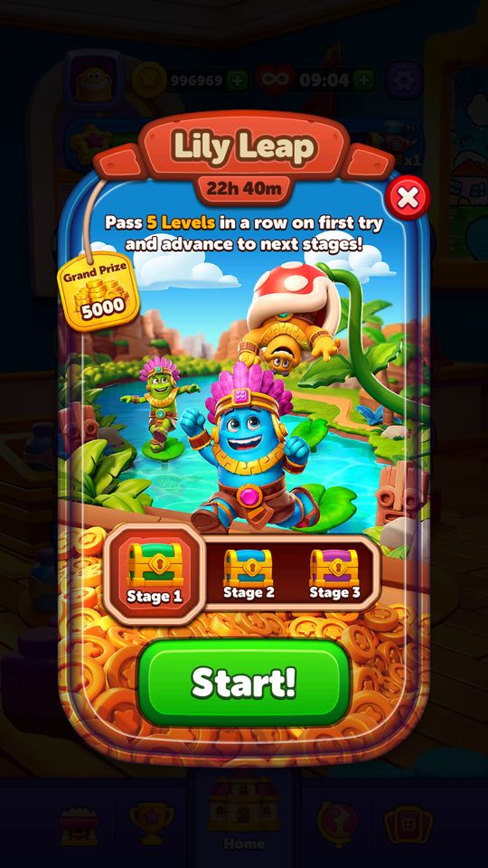
Lily Leap: 5 màn liền, giải 5.000 - Ghép 100 ngườiServer Playtest“Finding players on your level” đếm 10/100 → 100/100, các avatar xếp thành đống, Tap to Continue.
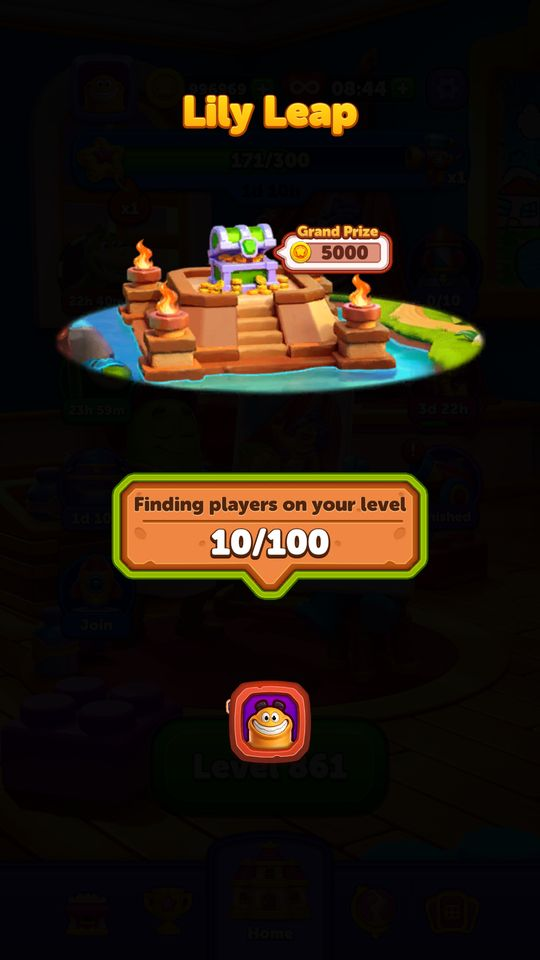
Tìm người: 10/100 Đủ 100 người - Bản đồ lá senGiao diện PlaytestStages 1/3, Levels 0/5, Players 100/100, 23h 59m; 5 lá sen dẫn tới đền có rương 5.000.
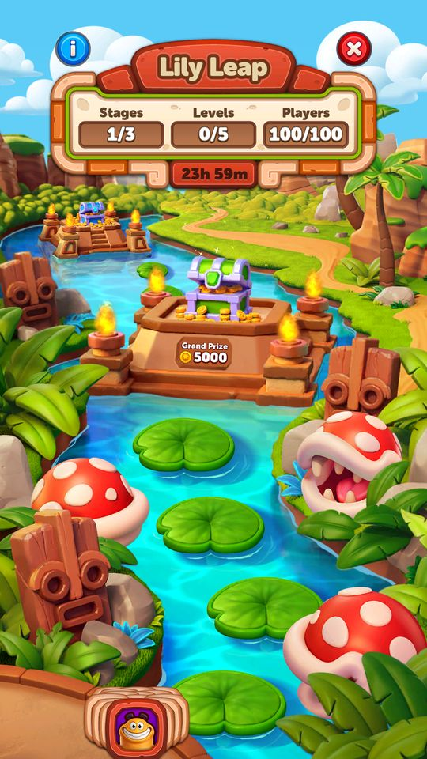
0/5, 100 người, 23h 59m - Mỗi trận thắng: nhảy và đếm người rơiClient PlaytestVề Home thì bản đồ tự mở: avatar nhảy lên lá kế, số Players giảm (100 → 85 → 70 → 54 → 39), lá phía sau chìm cùng người rơi.
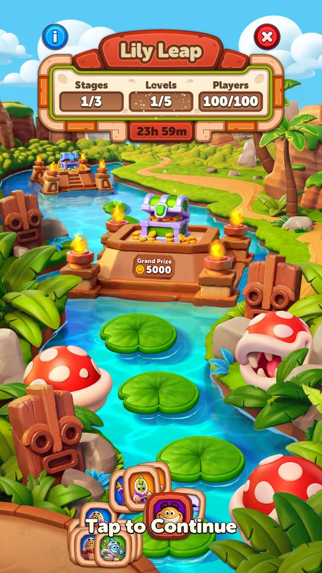
1/5: 100 người 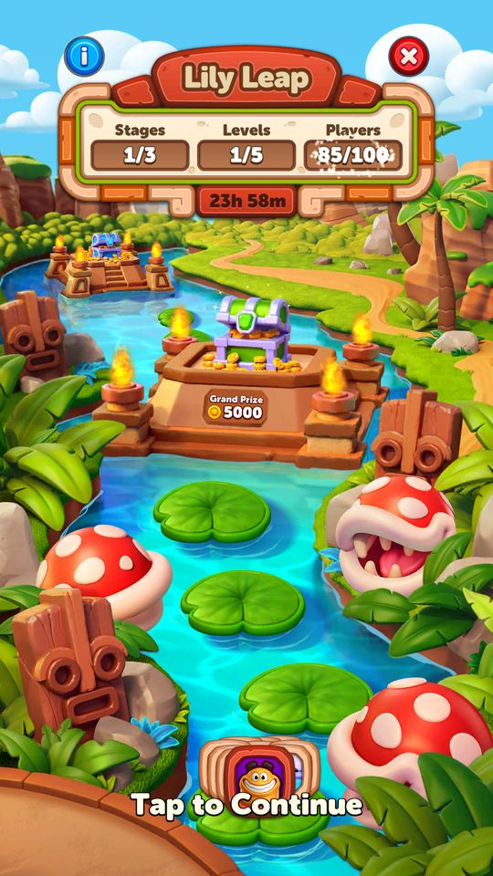
Còn 85 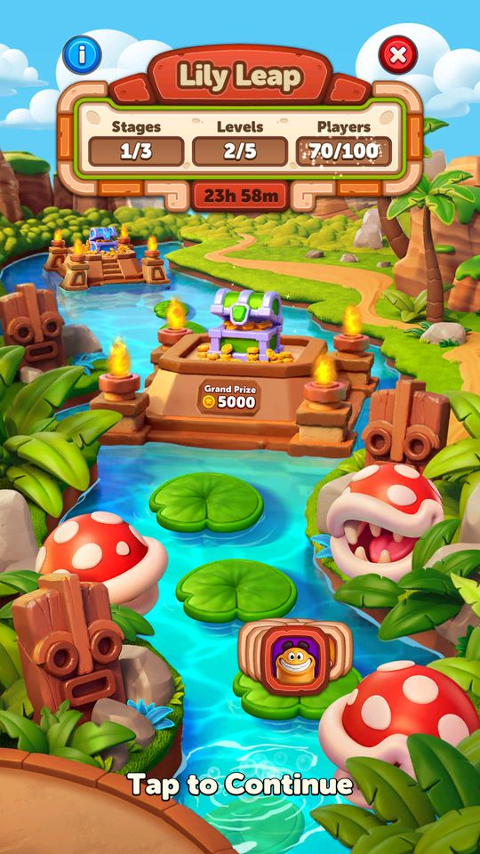
2/5: còn 70 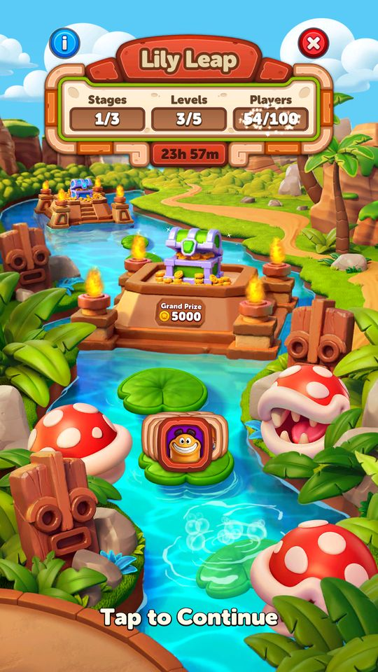
3/5: còn 54 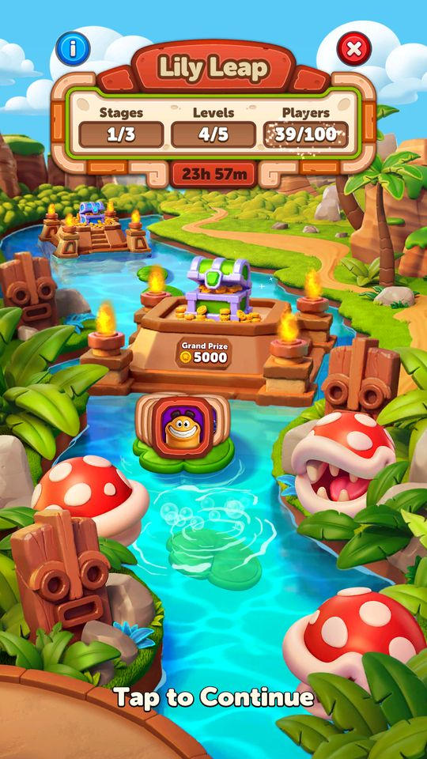
4/5: còn 39 - Về đích, chia giảiClient PlaytestCongratulations! You win!217 coin, “You are sharing the reward with 22 other winners!”, rồi Lily Leap Rewards.
- Mời stage 2Giao diện PlaytestNgay sau đó: Pass 7 Levels in a row, Grand Prize 7000, Stage 1 đã tích.
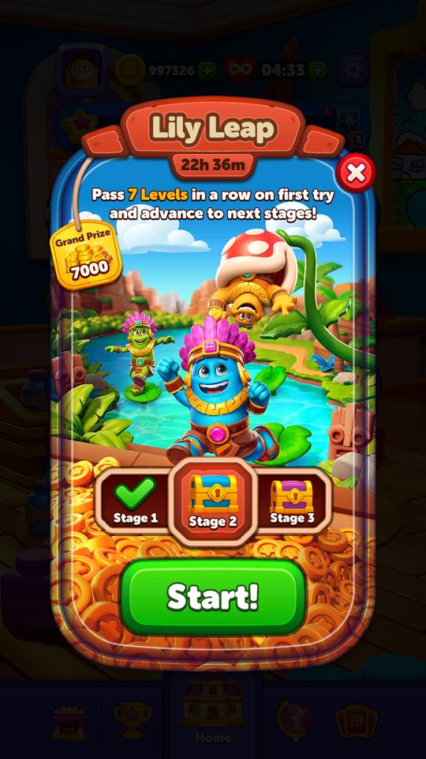
Stage 2: 7 màn, 7.000


Số người còn lại theo bước (playtest)
| Bước | Còn lại | Rơi ở bước này | Phần chia nếu về đích lúc này |
|---|---|---|---|
| 0 | 100 | 50 | |
| 1 | 85 | 15 | 58 |
| 2 | 70 | 15 | 71 |
| 3 | 54 | 16 | 92 |
| 4 | 39 | 15 | 128 |
| 5 | 23 | 16 | 217 |
PlaytestNhận định Bot do server mô phỏng; khoảng 15–16% số người ban đầu rơi ở mỗi bước. 77% bị loại sau 5 bước.
Stage (live 28/10)
| Stage | Số màn liền | Giải (chia đều) |
|---|---|---|
| 1 | 5 | 5.000 |
| 2 | 7 | 7.000 |
| 3 | chưa thấy | 10.000 |
Live 28/10 skyJumpWithStageConfigModel; số màn của stage do server gửi (GetStageStepCount).
Vận dụng cho game khác
- Ghép “100 người” và cho người chơi xem đám đông rơi dần: con số còn lại là động lực mạnh, dù đối thủ là bot.
- Thưởng chia đều với một con số giải lớn: hiển thị hấp dẫn (5.000), chi phí thật thấp (217/người khi 23 người về đích).
- Đồng hồ cá nhân 24 giờ từ lúc tham gia: ai vào lúc nào cũng có đủ thời gian.
- Nhận định Rủi ro: người chơi tinh ý sẽ thấy giải thật quá nhỏ so với quảng cáo. Có thể cố định số người về đích (hoặc chặn dưới phần chia) để giữ cảm giác đáng.
Bảng tổng hợp mọi tính năng đã làm chi tiết: BlockOut_ThietKeChiTiet.xlsx.
Còn thiếu / chưa xác minh
Mở khóa & điểm vào
SkyJumpWithStageConfigModel.FirstLevelToShow = 40, IsEnabled = true, EventType = 1.
Điểm vào:
- Biểu tượng Sky Jump ở Home
Cách hoạt động
- Cùng khuôn với Jetpack Race: SkyJumpWithStageStateType có thêm hai trạng thái riêng FinishedByLocal và FinishedByRemote (thay vì LocalTimeIsUp/RemoteTimeIsUp) — cho thấy sự kiện này kết thúc bằng việc hoàn thành chứ không chỉ bằng hết giờ.
- SkyJumpWithStageImpressionSource: LobbyIcon, EventJoin, EventEnd, ScoreIncreased.
Luồng chi tiết theo code
Cùng khuôn với Jetpack Race: SkyJumpWithStageStateType có thêm hai trạng thái riêng FinishedByLocal và FinishedByRemote (thay vì LocalTimeIsUp/RemoteTimeIsUp) — cho thấy sự kiện này kết thúc bằng việc hoàn thành chứ không chỉ bằng hết giờ. SkyJumpWithStageImpressionSource: LobbyIcon, EventJoin, EventEnd, ScoreIncreased.
Ảnh chụp màn hình (16)
16 ảnh chụp trong game (LDPlayer, bản 1006, tài khoản thử level 320 → 350 (07/10/2026)). Bấm ảnh để phóng to; nhãn UC dẫn tới use case tương ứng.

 3 rương Stage 1/2/3, Grand Prize 5.000 coin; nút Start
3 rương Stage 1/2/3, Grand Prize 5.000 coin; nút Start
 5.000 coin cho người về đích; qua chặng sau thưởng lớn hơn; thua 1 màn là rớt thử thách
5.000 coin cho người về đích; qua chặng sau thưởng lớn hơn; thua 1 màn là rớt thử thách 5.000 coin
5.000 coin 1.900 coin
1.900 coin


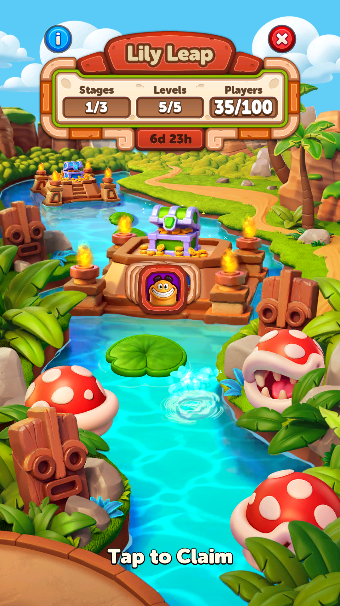

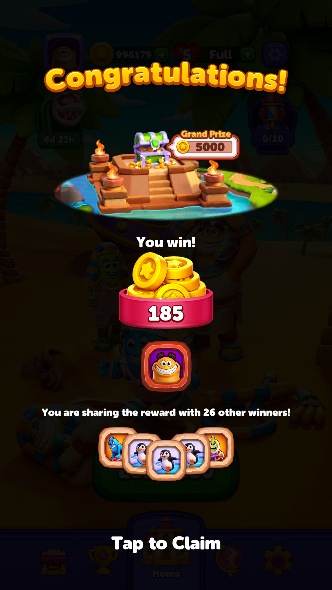
5.000 coin và You win 185; người chơi chia giải với 26 người thắng khác, tức tổng cộng 27 người theo kết quả đang cache. Đây là số liệu của fixture, không phải kết quả một cuộc đua live hiện tại. Fixture: sky-win; cache lịch sử, score5; thao tác nhận thực trong app. 185 coin và vẫn còn Tap to Claim. Snapshot tại thời điểm này ghi 996.179 coin, chưa tăng so với đầu fixture; chưa thể kết luận 185 coin đã được cộng vào kho. Fixture: sky-win; cache lịch sử, score5; thao tác nhận thực trong app.
185 coin và vẫn còn Tap to Claim. Snapshot tại thời điểm này ghi 996.179 coin, chưa tăng so với đầu fixture; chưa thể kết luận 185 coin đã được cộng vào kho. Fixture: sky-win; cache lịch sử, score5; thao tác nhận thực trong app.
Phần thưởng
Phần thưởng theo code
| Ngữ cảnh | Phần thưởng | Evidence |
|---|---|---|
| Chặng 1 / 2 / 3 | 5.000 / 7.000 / 10.000 coin | SkyJumpWithStageConfigModel |
Số liệu chính
| Chỉ số | Giá trị | Nguồn |
|---|---|---|
| SkyJumpWithStageConfigModel.EventType | 1 | SkyJumpWithStageConfigModel.EventType — Assets/Resources/defaultconfigs/SkyJumpWithStageConfigModel.json |
| SkyJumpWithStageConfigModel.FirstLevelToShow | 40 | SkyJumpWithStageConfigModel.FirstLevelToShow — Assets/Resources/defaultconfigs/SkyJumpWithStageConfigModel.json |
| SkyJumpWithStageConfigModel.Stage1RewardsAsCoin | 5000 | SkyJumpWithStageConfigModel.Stage1RewardsAsCoin — Assets/Resources/defaultconfigs/SkyJumpWithStageConfigModel.json |
| SkyJumpWithStageConfigModel.Stage2RewardsAsCoin | 7000 | SkyJumpWithStageConfigModel.Stage2RewardsAsCoin — Assets/Resources/defaultconfigs/SkyJumpWithStageConfigModel.json |
| SkyJumpWithStageConfigModel.Stage3RewardsAsCoin | 10000 | SkyJumpWithStageConfigModel.Stage3RewardsAsCoin — Assets/Resources/defaultconfigs/SkyJumpWithStageConfigModel.json |
Use case (3)
Bấm vào từng use case để mở. Mở/đóng tất cả
UC-01 Tham gia và tích điểm
Các bước- PopUpState = Join rồi InProgress
- Thắng màn cộng điểm
- ImpressionSource = ScoreIncreased khi popup mở do điểm tăng
| Actor | Player |
|---|---|
| Trigger | Thắng màn trong kỳ |
| Điều kiện | Đã đạt màn 40 |
| Kết quả | Tiến qua ba chặng |
| Quy tắc / số liệu | - |
| Evidence | enum SkyJumpWithStagePopUpState; enum SkyJumpWithStageImpressionSource |
UC-02 Nhận thưởng theo chặng
Các bước- Chặng 1 / 2 / 3 trả coin
| Actor | Player |
|---|---|
| Trigger | Đạt mốc chặng |
| Điều kiện | - |
| Kết quả | Nhận coin |
| Quy tắc / số liệu | Giải 5.000 / 7.000 / 10.000 coin là tổng, được CHIA ĐỀU cho người về đích (GetSharingRewardsWith, GetWinnerCount). Playtest: 5.000 / 23 = 217 coin. |
| Evidence | SkyJumpWithStageConfigModel.Stage1/2/3RewardsAsCoin |
UC-03 Kết thúc bằng hoàn thành hoặc hết giờ
Các bước- FinishedByLocal khi client thấy đã xong
- FinishedByRemote khi server xác nhận
- ClaimedLocally sau khi nhận
| Actor | System |
|---|---|
| Trigger | Đạt chặng cuối hoặc hết thời gian |
| Điều kiện | - |
| Kết quả | Chốt sự kiện |
| Quy tắc / số liệu | Hai trạng thái tách biệt để tránh lệch giữa máy và server |
| Evidence | enum SkyJumpWithStageStateType |
Cấu hình (7)
Gộp mọi nguồn: const trong code, JSON mặc định trong Resources, bảng static, storage key, AB test, cờ server.
| Nguồn | Key | Kiểu | Giá trị | Ý nghĩa | Nơi định nghĩa |
|---|---|---|---|---|---|
| code const | SkyJumpWithStageStateType | enum | Disable=0, ProgressNotEnough=1, NoCache=2, Join=3, InProgress=4, FinishedByLocal=5, FinishedByRemote=6, ClaimedLocally=8 | Lưu ý giá trị 7 bị bỏ trống | enum SkyJumpWithStageStateType |
| json default | SkyJumpWithStageConfigModel.IsEnabled | bool | true | Assets/Resources/defaultconfigs/SkyJumpWithStageConfigModel.json | |
| json default | SkyJumpWithStageConfigModel.EventType | int | 1 | Assets/Resources/defaultconfigs/SkyJumpWithStageConfigModel.json | |
| json default | SkyJumpWithStageConfigModel.FirstLevelToShow | int | 40 | Assets/Resources/defaultconfigs/SkyJumpWithStageConfigModel.json | |
| json default | SkyJumpWithStageConfigModel.Stage1RewardsAsCoin | int | 5000 | Assets/Resources/defaultconfigs/SkyJumpWithStageConfigModel.json | |
| json default | SkyJumpWithStageConfigModel.Stage2RewardsAsCoin | int | 7000 | Assets/Resources/defaultconfigs/SkyJumpWithStageConfigModel.json | |
| json default | SkyJumpWithStageConfigModel.Stage3RewardsAsCoin | int | 10000 | Assets/Resources/defaultconfigs/SkyJumpWithStageConfigModel.json |
Backend / server
| Command | Chiều | Mục đích |
|---|---|---|
SkyJumpWithStage event | client↔server | kỳ sự kiện |
Storage keys
SkyJump data
Chưa đọc được / ghi chú
- Thư mục Home/SkyJump (bản không có chặng) vẫn còn trong code nhưng không thấy dùng — có thể là bản cũ chưa gỡ.
- Số màn của stage 3 chưa quan sát (stage 1: 5, stage 2: 7).
Tính năng liên quan
Rocket Race (Jetpack Race theo chặng) Mission Carnival (Magic Lab)
Nguồn đã đọc
- PseudoC/.../Home/SkyJumpWithStage/*.c
- Assets/Resources/defaultconfigs/SkyJumpWithStageConfigModel.json